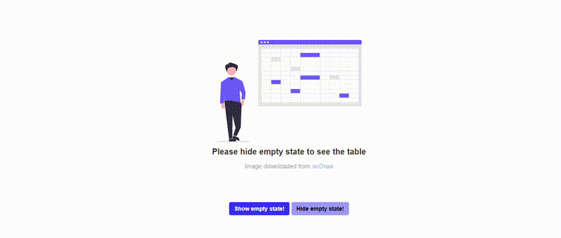

How to Use unDraw/Drawkit Illustrations
use-undraw-drawkit-image.RmdIntroduction
shiny.emptystate allows for easy creation and handling
of empty state components in a Shiny application. Users can create empty
state components by creating their own html contents. This means that
users can also include images, including those from illustration
services like DrawKit and unDraw, in their empty
states.
Including Images
Using images as empty state can be as easy as providing the
src in
shiny::tags$image()/shiny::tags$img().
For vanilla Shiny, we suggest storing your images in a directory
within www. When creating the empty state manager, either
use the path to the image, e.g. www/img/image.png as
src
empty_state_manager <- EmptyStateManager$new(
id = "myElement",
html_content = tags$image(src = "www/img/image.png")
)Or if you are using the utility function
empty_state_component(),
empty_state <- empty_state_component(
content = tags$img(src = "www/img/image.png"),
title = "No content to display"
)For a Rhino
application, we suggest storing images in a directory within
app/static. Rhino encourages the use of Shiny modules, so
when creating an empty state manager always namespace the id of the
element you want to handle.
If the image is in app/static/img/image.png, you can use
the same code as above. Update the src path
accordingly.
# In your module's server function
ns <- session$ns
empty_state_manager <- EmptyStateManager$new(
id = ns("myElement"),
html_content = tags$image(src = "app/static/img/image.png")
)
empty_state <- empty_state_component(
content = tags$img(src = "app/static/img/image.png"),
title = "No content to display"
)All image file formats (including gif) should work, but
we suggest using png and svg. URL paths can
also work, but we suggest keeping the images in the application’s
directory path.
The size of the images can be specified inline,
e.g. style = "height = "10rem", or through CSS.
Using Images from DrawKit/unDraw
Important: Before using illustrations from the mentioned services, please get acquainted with their respective licenses: DrawKit License, unDraw License.
We will use an image from unDraw as an example.
For vanilla Shiny, the path to the image can be
www/undraw_spreadsheet_re_cn18.svg.
For Rhino, path to the image can be
app/static/img/undraw_spreadsheet_re_cn18.svg but the path
passed to src should only be
/static/img/undraw_spreadsheet_re_cn18.svg.
The example below works for vanilla Shiny.
library(shiny)
library(shiny.emptystate)
library(reactable)
library(fontawesome)
ui <-
fluidPage(
tags$head(
tags$style(HTML(
"body > div.container-fluid {
display: flex;
flex-direction: column;
align-items: center;
}
#my_table {
margin-top: 5rem;
margin-bottom: 2rem;
}
#my_image {
height: 25rem;
}
#toggle_emptystate_buttons {
display: flex;
flex-direction: row;
align-items: center;
}
#show {
border-color: transparent;
border: 0;
background-color: #3838fa;
color: white;
font-weight: 600;
margin-right: 0.25rem;
}
#hide {
border-color: transparent;
border: 0;
background-color: #9c9cfc;
color: black;
font-weight: 600;
margin-left: 0.25rem;
}"
))
),
use_empty_state(),
reactableOutput("my_table", width = "60%"),
tags$div(
id = "toggle_emptystate_buttons",
actionButton("show", "Show empty state!"),
actionButton("hide", "Hide empty state!")
)
)
server <- function(input, output, session) {
empty_state_content <-
empty_state_component(
tags$image(id = "my_image", src = "undraw_spreadsheet_re_cn18.svg"),
title = "Please hide empty state to see the table",
subtitle = tags$span(
"Image downloaded from ",
tags$a("unDraw", href = "https://undraw.co/illustrations")
)
)
empty_state_manager <- EmptyStateManager$new(
id = "my_table",
html_content = empty_state_content
)
observeEvent(input$show, {
empty_state_manager$show()
})
observeEvent(input$hide, {
empty_state_manager$hide()
})
output$my_table <- reactable::renderReactable({
reactable(iris)
})
}
shinyApp(ui, server)
Note that the empty state component was built using
empty_state_component(), but you can create a more
customized empty state component that will allow you to use more than
one image. Adding ids on images may also be useful when it comes to
styling, e.g. setting the proper image size via CSS.